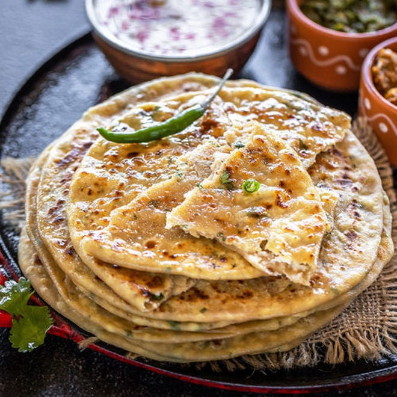

Paneer Paratha Recipe

Description
Paneer paratha is a popular North Indian stuffed flatbread made with a whole wheat flour dough and filled with savory, spiced, grated paneer (Indian cottage cheese) stuffing.
Paneer paratha is one of the most popular stuffed paratha varieties from Punjab and usually made for breakfast.
Ingredients
For Whole Wheat Dough
- 2 to 2.25 cups whole wheat flour - 240 grams to 270 grams
- ⅔ cup water or add as required
- 1 teaspoon Ghee or oil
- ½ teaspoon salt or add as required
For Paneer Paratha Stuffing
- 200 grams Paneer (Indian cottage cheese)
- 1 or 2 green chilies - finely chopped or ½ to 1 teaspoon
- ½ teaspoon red chili powder
- ½ teaspoon Garam Masala
- ½ to ¾ teaspoon dry mango powder (amchur powder) or add as per your taste
- ½ teaspoon salt or add as required
- Ghee or oil as required for roasting parathas
Steps
- Take whole wheat flour, salt, ghee or oil in a mixing bowl.
- Pour ½ cup water first.
- Mix and begin to knead. Add more water if required and knead to a smooth soft dough. Overall I added ⅔ cup water.
- Cover and allow the dough to rest for 20 to 30 minutes.
- Meanwhile while the dough is resting, prepare the stuffing. Grate the paneer.
- Add the finely chopped green chilies, dry mango powder, punjabi garam masala or garam masala powder, red chili powder and salt.
- You can add more of the salt, red chili powder or dry mango powder if you prefer.
- Mix everything well so that the spice powders are evenly mixed with the grated paneer.
- Pinch two small balls from the dough and roll them in your palms to make them even.
- Dust some flour on the dough balls.
- With a rolling pin, roll the dough balls to a circle of about 4 to 5 inches in diameter.
- Place the paneer stuffing on one of the rolled rounds keeping one inch space around the circumference.
- Cover with the other rolled dough and press the edges well.
- Sprinkle some flour and roll the stuffed paratha to a circle of about 6 to 7 inches in diameter.
- Heat a tava or griddle and then place the rolled paratha on it. The tava should be hot. To check the heat, sprinkle a generous pinch of whole wheat flour on the tawa. If the whole wheat flour becomes brown in some seconds, the tawa is hot enough to roast the parathas.
- Flip when one side is partly cooked. About ¼ cooked.
- Apply ghee on this side with a spoon. Turn over and flip when the second side is half cooked.
- Let the ghee side get cooked now. Spread some ghee on the top. Flip again using a spatula.
- Press the paratha edges with a spatula so that the edges are cooked.
- Flip once or twice till the paratha has golden spots and is evenly cooked.
- Place them in a roti basket or casserole.
- Optionally you can place some butter on top and spread it with a spoon.¼
- Wipe the excess whole wheat flour if any, with a cotton kitchen napkin. So that the browned whole wheat flour does not stick to the parathas.
- Make all paratha this way on the tawa (griddle).
- Keep on stacking them in the roti basket or casserole. Spread some butter on each paratha while stacking them.
- If not stacking them, then serve paneer paratha hot with some fresh yogurt or pickle and butter. A cup of hot ginger tea will also go very well.